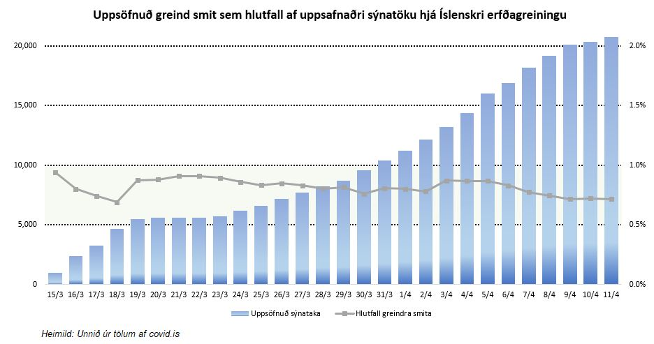
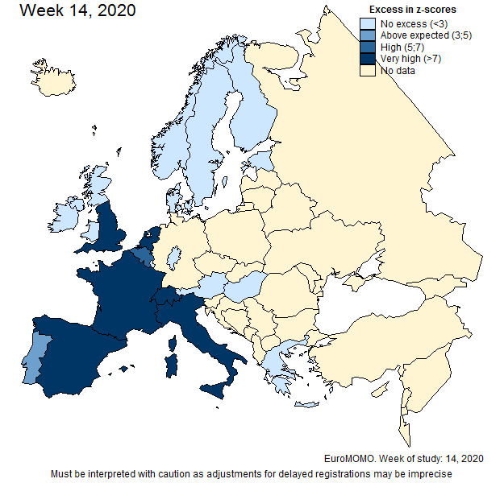

Ertu að drukkna í tölum? — Leiðarvísir fyrir COVID-19
Það er ógrynni af tölum í tengslum við COVID-19 faraldurinn sem veitist mörgum erfitt að ná utan um. Þar sem bakgrunnur minn felst í að mæla, greina og setja fram tölfræðilegar upplýsingar, auk þess sem ég hef sérstakan áhuga á viðfangsefninu, þá útbjó ég þennan leiðarvísi fyrir túlkun á helstu hugtökum. Vonandi verður hann einhverjum að gagni.
Staðfest smit og útbreiðsla
Fjölmiðlar birta reglulega tölur um staðfest smit og bera saman við tölur dagsins á undan. Staðfest smit eru síðan borin saman milli landa og ályktanir dregnar af því um útbreiðslu sjúkdómsins.
Á þessu eru ýmsir annmarkar. Í fyrsta lagi eru staðfest smit aðeins sá hluti smita sem hefur náðst að greina. Niðurstöður Íslenskrar erfðagreiningar sýna til dæmis að ætla megi að stór hluti smitaðra sé annaðhvort án einkenna eða með það væg einkenni að hætt sé við að viðkomandi átti sig einfaldlega ekki á því að þeir séu smitaðir og þá auðvitað í hættu á að smita aðra. Lykilatriði í að hamla útbreiðslu er einmitt að finna sem fyrst þá sem eru smitaðir og taka þá úr umferð.
Skimun er tækið til þess. Samkvæmt niðurstöðum Íslenskrar erfðagreiningar þá má ætla að undir eitt prósent þjóðarinnar sé smitað (myndin hér fyrir neðan á við alla sýnatöku ÍE, handahófsúrtak sýnir enn lægri tölu). Með það í huga að rúmlega sautján hundruð smit hafa þegar verið staðfest og hátt í þrjú þúsund einstaklingar eru í einangrun, er ekki við því að búast að ýkja margir séu í samfélaginu að smita út frá sér.

Ef við berum þetta saman við Ítalíu þá má ætla að útbreiðslan sé töluvert meiri þar – það hafi einfaldlega ekki náðst að greina nema hluta þeirra sem eru smitaðir. Það fær frekari staðfestingu þegar litið er á fjölda innlagna sem er annar mikilvægur mælikvarði sem við skoðum betur á eftir. Staðfest smit á íbúa eru töluvert hærri á Íslandi en á Ítalíu eða 467 á hverja 100.000 íbúa hér heima en ekki nema 252 á hverja 100.000 íbúa á Ítalíu þegar þetta er skrifað. Samt dylst engum að ástandið er langtum verra suður frá.
Í öðru lagi þá þarf að hafa í huga að ríki eru að sjálfsögðu mis fjölmenn. Þannig er borgríkið San Marinó það ríki sem hefur orðið verst úti í faraldinu þegar horft er á fjölda dauðsfalla miðað við höfðatölu. Flest dauðsföll hafa átt sér stað í Bandaríkjunum en miðað við höfðatölu eru þau, þegar þetta er skrifað, færri þar en í Svíþjóð.
Í þriðja lagi verður að líta til þess að faraldurinn varð ekki að faraldri á sama tíma í öllum ríkjum. Þannig hófst hann til dæmis fyrr á Ítalíu en á Norðurlöndum þrátt fyrir að fyrsta smitið hafi greinst þremur dögum fyrr í Finnlandi en á Ítalíu. Það var þó ekki fyrr en í lok febrúar sem útbreiðslan hófst af alvöru á Norðurlöndum og þá var veiran þegar búin að breiðast út um norðurhéruð Ítalíu. Faraldurinn hófst líka seinna í Bandaríkjunum en í Evrópu sem skýrir af hverju dauðsföll á íbúa er enn tiltölulega fá þar.
Í fjórða lagi þá gefur fjölgun staðfestra smita mjög takmarkaða mynd af þróun faraldursins. Auknir möguleikar á sýnatöku leiða til fleiri staðfestra smita meðan takmörkun þeirra hefur öfug áhrif. Þannig þarf að fara varlega í að túlka sveiflur í þróun staðfestra smita. Bandaríkin hafa til dæmis stórlega aukið sýnatöku síðustu vikur sem aftur hefur þær afleiðingar að staðfestum smitum fjölgar meira fyrir vikið.
Að lokum má svo ekki rugla staðfestum smitum saman við virk smit. Staðfest smit eru uppsöfnuð tala sem hækkar þangað til að engin ný smit greinast. Til að mynda hafa 11 smit verið staðfest á Grænlandi þegar þetta er skrifað. Sú tala er búin að vera óbreytt um hríð og það sem meira er, öllum þeim sem hafa greinst hefur nú batnað. Það eru því engin virk smit á Grænlandi um þessar mundir. Talan um staðfest smit minnkar hinsvegar ekki. Hún segir með öðrum orðum ekki til um ástandið, hún er minnisvarði um sjúkdóminn.
Virk smit
Er þá ekki miklu skynsamlegra að skoða þróun virkra smita? Jú, vissulega. Vandinn er hinsvegar sá að upplýsingar um þá sem hafa náð bata liggja ekki allstaðar fyrir. En þegar þær liggja fyrir, gefur þróun virkra smita miklu skýrari mynd af stöðunni. Þau gefa okkur til dæmis ástæðu til að ætla að hámarki faraldursins sé þegar náð á Íslandi.
Það verður þó að setja þann fyrirvara á að þar sem virk smit eru auðvitað ekkert annað en staðfest smit að frádregnum þeim einstaklingum sem hafa annaðhvort náð bata eða dáið, þá metur hún einungis þann hluta útbreiðslunnar sem hefur þegar verið staðfestur. Virk smit eru því eðli málsins samkvæmt frekar vanmetin en ofmetin.
Annar kostur við að skoða virk smit frekar en staðfest er svo sá að það gefur okkur færi á að sjá kúrfuna fara niður með tilheyrandi geðbætandi áhrifum!
Sjúkrahúsinnlagnir
Að “fletja kúrfuna” eins og það hefur verið kallað gengur út á að tryggja að álagið á heilbrigðiskerfið á hverjum tíma verði ekki meira en kerfið ræður við. Þar er annarsvegar átt við þann hluta smitaðra sem þurfa á sjúkrahúsinnlögn að halda og svo hinsvegar þá sem þurfa á meiri þjónustu að halda, það er gjörgæslurými og öndunarvélar. Það liggur því beint við að fylgjast beint með þeim fjölda sem þarf af leita á náðir sjúkrahúsanna.
Eins og Landlæknir og Sóttvarnalæknir hafa ítrekað bent á jafngildir það að útbreiðslan hafi náð hámarki ekki því að hámarki sé náð þegar kemur að innlögnum þar sem það tekur nokkurn tíma fyrir einkennin að verða það slæm að þau kalli á innlögn.
Ef sjúkrahúsinnlögnum er farið að fækka er það ágætis vísbending um að faraldurinn sé í rénum. Það gleður mig að segja að þetta hefur einmitt verið þróunin undanfarið á Norðurlöndum. Innlögnum er farið að fækka í Noregi og í Danmörku og mjög hefur dregið úr fjölgun þeirra í Svíþjóð. Þetta stefnir því allt í rétta átt.
Önnur góð ástæða til að fylgjast með innlögnum er að þær veita vísbendingar um raunverulega útbreiðslu sjúkdómsins. Töluvert fleiri liggja inni á sjúkrahúsum á Ítalíu en á Norðurlöndum þegar miðað er við höfðatölu sem gefur ástæðu til að ætla að útbreiðslan sé nokkuð meiri þar en staðfest smit gefa til kynna.
Dauðsföll og dánartíðni
Þá kemur að óþægilegustu stærðinni, dauðsföllunum. Í upphafi mars lýsti Alþjóðaheilbrigðismálastofnunin því yfir að búast mætti við því að 3-4% þeirra sem smituðust myndu látast. Til samanburðar er yfirleitt gengið út frá því að 0,1% þeirra sem fái hefðbundna flensu látist.
Ef við berum fjölda látinna saman við staðfest smit þá hafa nú þegar 12,8% látist á Ítalíu og 10,2% á Spáni þegar þetta er skrifað. Þessar tölur þarf hinsvegar að skoða með miklum fyrirvara. Í fyrsta lagi þá má ætla að nefnarinn (fjöldi smitaðra) sé vanmetinn, það er að fleiri hafi smitast og lifað af en gögn séu til um. Í öðru lagi þá er erfitt að meta dánartíðni í faraldri sem er enn í gangi. Og í þriðja lagi þá kunna dauðsföllin sjálf að vera vanmetin. Þegar velja þarf á milli þess að greina smit hjá lifandi manneskju og látinni, þá er ljóst hvor verður fyrir valinu.
Þetta þarf jafnframt að hafa í huga þegar dauðsföll eru borin saman á Norðurlöndum. Þegar þetta er skrifað hafa 8,6% þeirra sem hafa greinst með COVID-19 í Svíþjóð látist í samanburði við rúm 4% í Danmörku, tæp 2% í Noregi og Finnlandi og 0,5% á Íslandi (enginn hefur látist í Færeyjum eða á Grænlandi). Þýðir þetta að við séum að gera svona miklu betur en frændur okkar? Ekki endilega. Íslendingar eru ekki bara með Norðurlandametið heldur heimsmetið í sýnatöku á meðan Svíar hafa verið með mjög takmarkaða sýnatöku. Nefnarinn er því varla sambærilegur.
Það er mun eðlilegra að bera dauðsföllin saman við íbúafjölda. Tveir þriðju dauðsfalla á Norðurlöndum hafa átt sér stað í Svíþjóð. Það er þó nokkuð hærra hlutfall en íbúafjöldinn ber með sér (Svíar eru 38,6% Norðurlandabúa), en samt langtum minni munur en þegar miðað er við staðfest smit. Eins og stendur þá eru 8,7 af hverjum 100.000 íbúum látnir í Svíþjóð í samanburði við 4,7 í Danmörku, 2,2 í Noregi og á Íslandi og 1,0 í Finnlandi. Hér verður líka að hafa í huga að tölurnar eru í þróun. Þar hefur áhrif hvar viðkomandi land er statt á sjúkrahúskúrfunni.
Fleiri þættir hafa svo áhrif. Aldur hefur til að mynda mikið að segja um lífslíkur sjúklinga. Ítalía og Spánn eru með töluvert hátt hlutfall eldri borgara í samanburði við Ísland. Finnland og Svíþjóð eru líka með tiltölulega hátt hlutfall íbúa í elsta aldurshópnum. Þannig má búast við hærri dánartíðni í Svíþjóð en á Íslandi.
Umframdauði
Í upphafi faraldursins var hann oft borinn saman við flensu og bent á að dágóður fjöldi fólks lætur lífið á hverju ári vegna hennar án þess að sérstakt veður sé gert út af því. Það er rétt eins langt og það nær. Ólíkt því sem á við um flensu er COVID-19 hinsvegar jafnframt að ná að fella fólk á besta aldri og án undirliggjandi sjúkdóma til viðbótar við þá sem standa veikastir fyrir. Dauðsföllin koma þó að einhverju leyti í staðinn fyrir dauðsföll af öðrum ástæðum – þeir sem deyja úr COVID-19 deyja þá að minnsta kosti ekki úr flensu. Hinsvegar er hluti þeirra hrein viðbót. Hér að neðan er að finna mat á umframdauðsföllum í síðustu viku (viku 14) hjá þeim Evrópuríkjum og héruðum sem taka þátt í hinu svokallaða EuroMOMO kerfi (tölurnar eiga við fjölda staðalfrávika frá langtímameðaltali dauðsfalla á viðkomandi tímabili):

Þarna koma áhrifin af COVID-19 sterk fram á Ítalíu, Spáni, Frakklandi, Sviss, Hollandi og Englandi og að einhverju leyti í Portúgal og Belgíu. Hinsvegar er faraldurinn ekki að hafa sömu áhrif á Norðurlöndum, að minnsta kosti ekki ennþá. Jafnframt er rétt að taka fram að tölurnar kunna að breytast – það mæðir töluvert á skráningaraðilum þessa dagana.
Svo verður að hafa í huga þegar COVID-19 er borinn saman við aðra sjúkdóma að þeir sem koma til með að láta lífið vegna hans eru þeir sem dóu þrátt fyrir allar þær aðgerðir sem gripið var til. Án þeirra hefðu dauðsföllin vísast til orðið töluvert fleiri, auk þess sem faraldurinn er enn í örum vexti.
Lokaorð
Til að taka þetta saman, þá þarf alltaf að fara varlega í að túlka tölur og gæta þess að skoða þær í réttu samhengi. Jafnframt eru Norðurlönd að standa sig vel í samanburði við mörg önnur ríki þótt innan þeirra sé líka nokkur munur. Að lokum er það svo ekki að ástæðulausu er verið að grípa til svona harkalegra aðgerða víða um heim. Þetta er illvígur andskoti.
Ábendingar eða athugasemdir? Hafðu samband við mig hér til hliðar